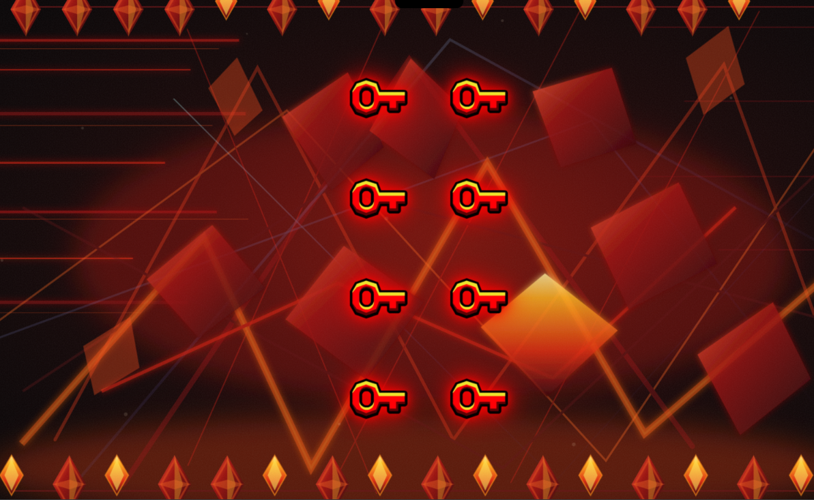

High Detail
Click on flash
TRY EXAMPLELIMBO KEYS / LINK GUIDE
Set a destination, choose how the challenge looks and plays, then create and share your short link.
Use a public HTTPS URL (up to 2048 characters). Links with credentials or a destination on this site are not accepted.
High Detail uses the illustrated animated background and image keys. Low Detail uses a plain black background and simple keys, reducing visual effects for lower-end devices.

“Show hint” displays the selection instruction during the final part of the challenge.
Select CREATE LINK, then copy the generated URL. Anyone with the link can use it, and the destination is stored by this site. Don’t use links for passwords, private files, or other sensitive information.
Safety: the challenge includes flashing, blinking, rotating visuals, and audio. It may not be suitable for people with photosensitive epilepsy or motion sensitivity.
Try each challenge combination. (Every link includes the hint.)
Click on flash
TRY EXAMPLESelect the correct key
TRY EXAMPLEClick on flash
TRY EXAMPLESelect the correct key
TRY EXAMPLE